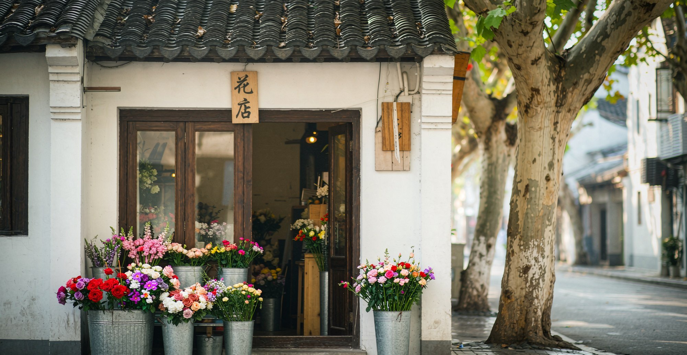
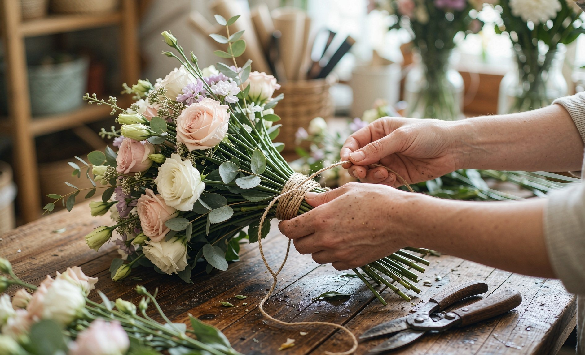
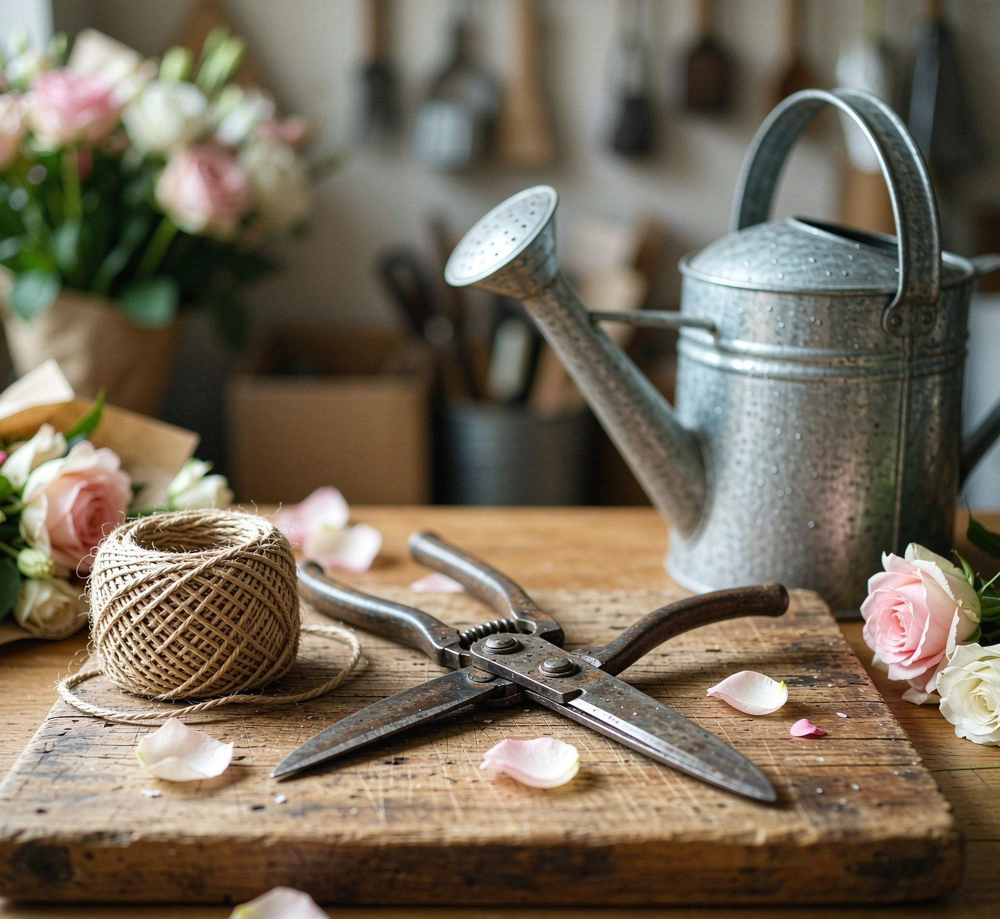
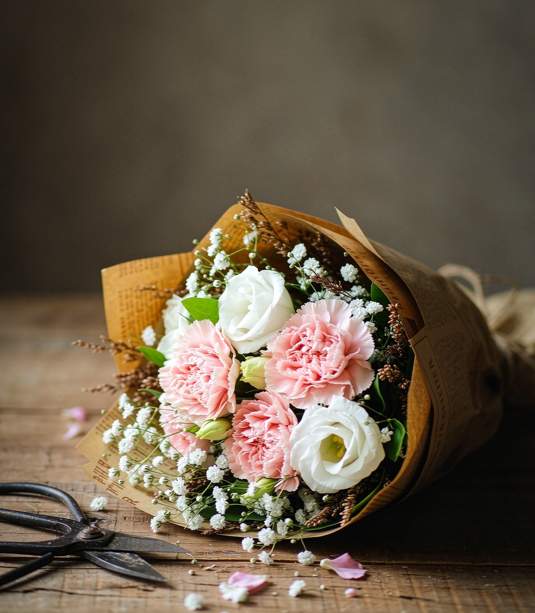
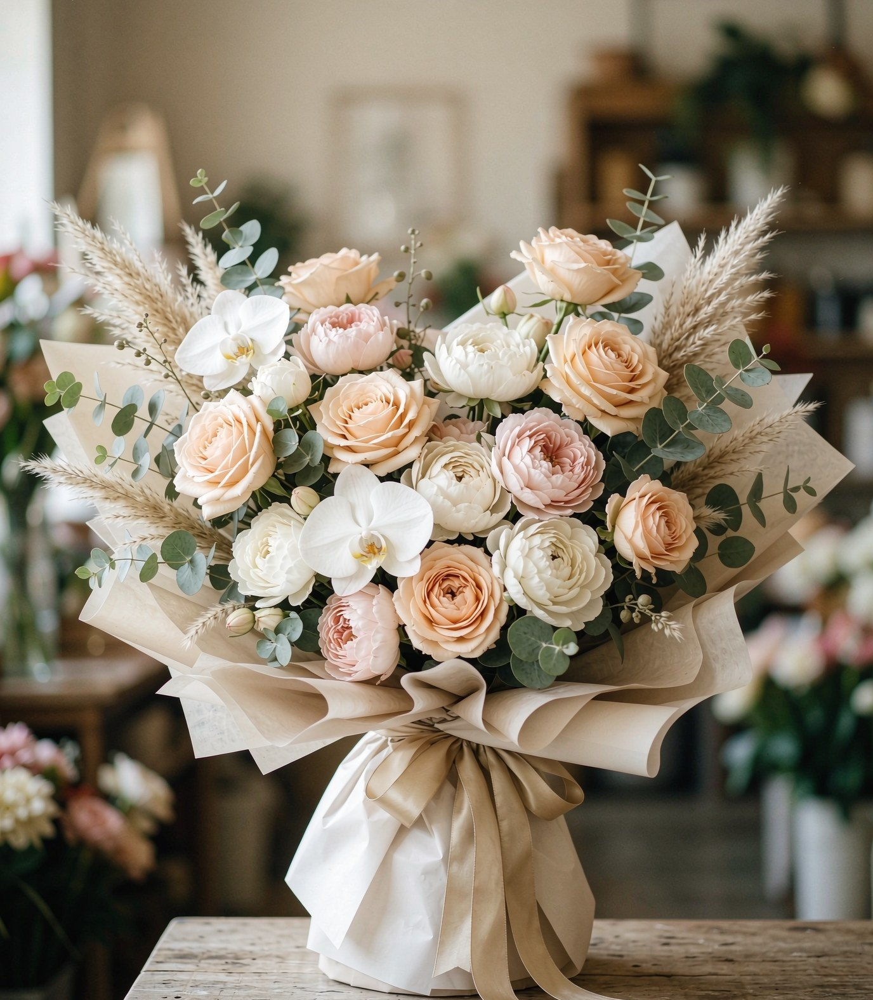
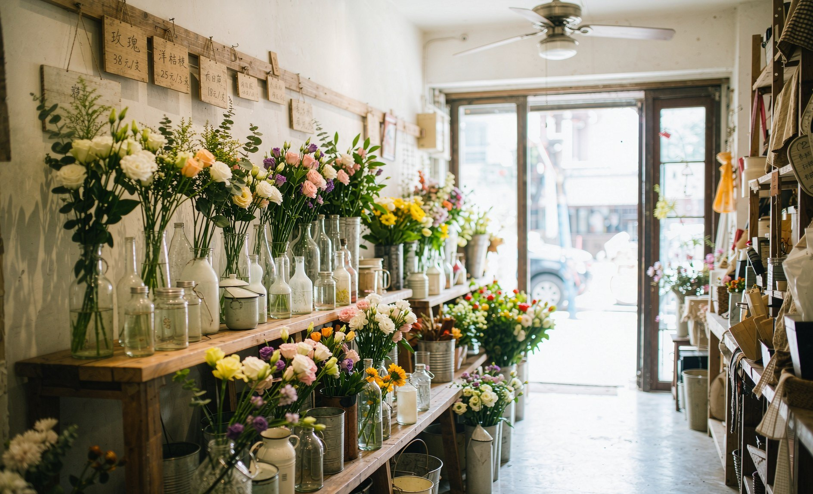
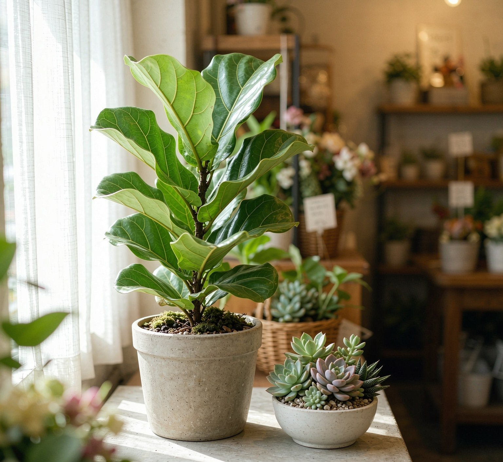
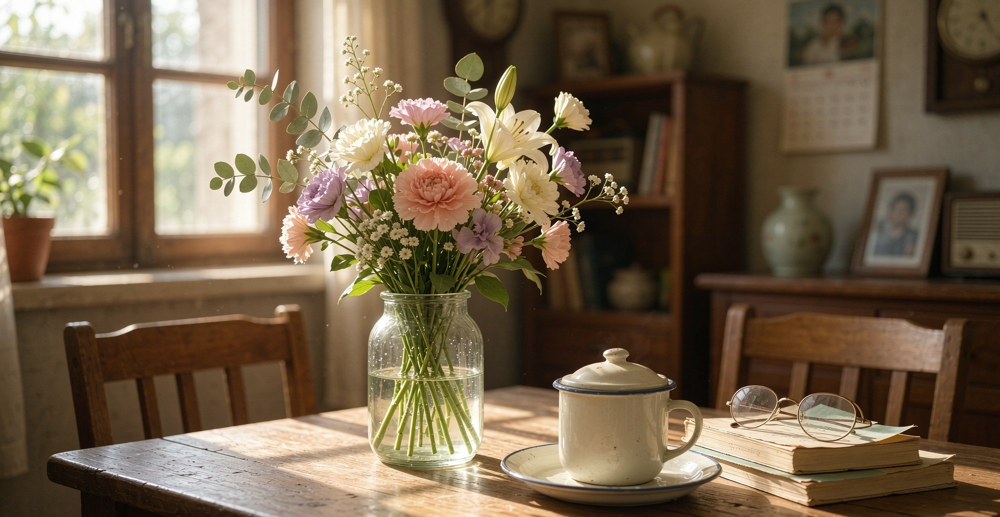

01店在街边

店在街边，门口摆着花桶，路过就能看见。进来挑花，或者站在门口闻一闻，都行。
02手上的活

花在这里是一枝一枝挑出来的：去刺、配叶、麻绳扎紧、牛皮纸一包。手上的事，急不来。
花是一枝一枝挑的，一束一束包的。

麻绳、花剪、洒水壶，都是天天用的老东西。用得越久，越顺手。
03在售花目
店里有什么、什么价，写在这张表上。
| 品名 | 花材 | 规格 | 价格 |
|---|---|---|---|
| [待填] | [待填] | [待填] | [待填] |
| [待填] | [待填] | [待填] | [待填] |
| [待填] | [待填] | [待填] | [待填] |
上表为价目占位，待店主填写。

常备的花束样式，牛皮纸一包就能带走。想要别的花材，微信上说一声，照着配。

送人挑大束的：香槟色配白瓷一样的芍药，拿出来体面。
04来店里坐坐

店里不大，木架上摆满瓶瓶罐罐的花。慢慢看，看中了喊一声就行。
- 地址 [待填]
- 营业时间 [待填]

不止切花。窗边还有好养的绿植和小多肉，配好盆，抱回家就能活。
05订花
加微信或打电话，说想要的花和时间。
- 微信 [待填]
- 电话 [待填]
06花在家

挑一束带回家，往瓶子里一插，屋里就亮了。